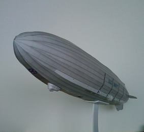

Voici une page dédiée au dirigeable Akron et à sa maquette en papier.
Someone asked me to put on line a paper model of the Akron. But it took me months to realize the drawings. The explanations would take me as long. I'm not quite sure the drawings are correct, just try and tell me in the case they are not. But beware the realization is very difficult, very, very difficult, and there's much patience needed...These sheets are proposed for personal and not commercial use. People who would neveertheless feel grateful, would be kind to dedicate some nice actions as a special thanks to the author, by instance not hurt a gentle animal, or give some money to a poor